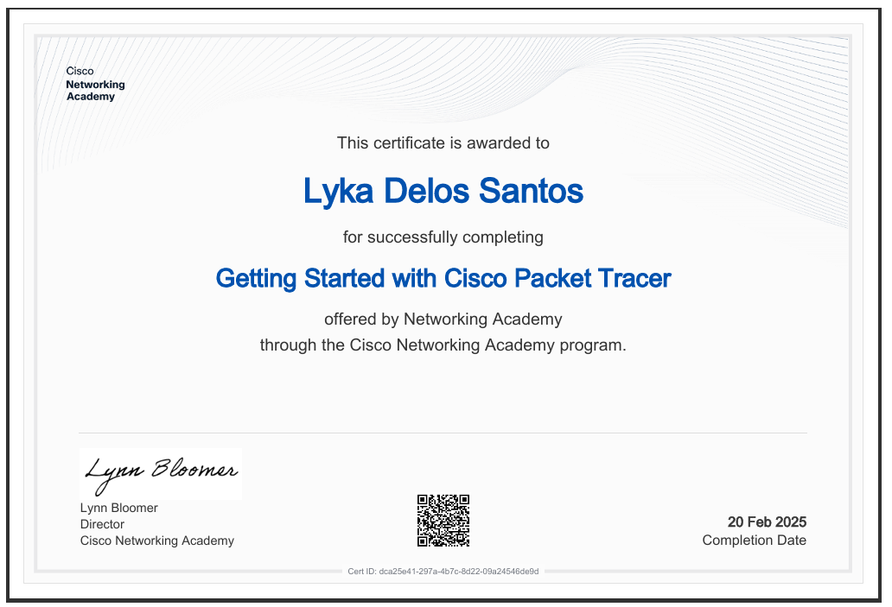

← Back to Certificates
← Back to Certificates
← Back to Certificates
← Back to Certificates

Completed the Getting Started with Cisco Packet Tracer course, gaining introductory knowledge of networking concepts, Cisco technologies, and the fundamentals of computer networks. This course helped strengthen my understanding of network communication and develop my interest in computer networking and IT infrastructure.
Certificate Title: Getting Started with Cisco Packet Tracer
Issued Date: Feb 20, 2025
Issuing Organization: Networking Academy
Course/Subject: Computer Programming 1 (NET 102)
Credential Type: Course Completion Certificate
Skills Acquired: